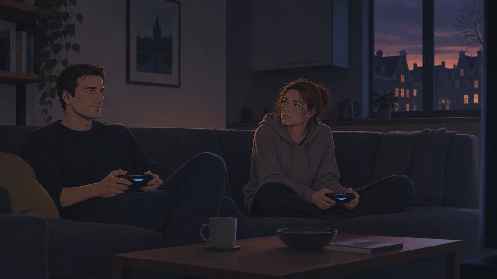
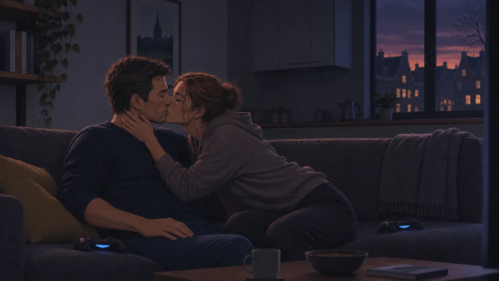

01Чужая квартира
Всё произошло настолько быстро, что по дороге домой Игорь никак не мог восстановить точную последовательность событий.
Он помнил, как Таня открыла дверь. На ней была серая футболка, волосы собраны в небрежный хвост. Она улыбнулась, совершенно обыкновенно, как улыбалась всегда.
— О, привет. Ваня предупреждал. Проходи.
Инструменты лежали в кладовке. Игорю нужны были мультиметр и осциллограф, которые Ваня обещал одолжить ещё на прошлой неделе. Сам Ваня находился в командировке, в Германии, и должен был вернуться в четверг.
Игорь нашёл приборы, сложил их в сумку и уже собирался уходить, когда Таня предложила чай.
Отказываться было неудобно. Да и с чего бы?
Они знали друг друга года четыре. Не то чтобы дружили отдельно от Вани, но постоянно пересекались. Ездили компанией в Бельгию, гуляли по Кёльну, однажды снимали домик в Арденнах. Таня была моложе Игоря, и он всегда воспринимал её как девушку своего приятеля. Симпатичную, общительную, временами немного взбалмошную.
Чай затянулся. Таня рассказала о работе, пожаловалась на новую начальницу. Потом они заговорили о поездке в Прагу, которую планировали на декабрь.
— Слушай, а давай сыграем? — предложила она. — Ваня купил новую игру, а я никак не могу пройти один уровень.
Игорь посмотрел на часы.
Было полвосьмого.
— Ну давай минут двадцать.
Они устроились на диване. Сначала всё шло как обычно. Таня ругалась на управление, Игорь смеялся, они несколько раз начинали уровень заново.
Потом наступила пауза.

Игорь смотрел на экран, ожидая, пока загрузится новая попытка, и вдруг заметил, что Таня отложила геймпад.
Она подвинулась ближе.
Он повернулся к ней.
Позже, вспоминая именно этот момент, он будет снова и снова задавать себе один вопрос: почему он ничего не сделал?
Почему не поднялся? Почему не отодвинулся хотя бы на десять сантиметров?
Вместо этого он протянул руку и осторожно провёл пальцами по её щеке.
Таня закрыла глаза.
А потом неожиданно подалась вперёд и поцеловала его в губы.
Поцелуй длился, наверное, секунду. Может быть, две.

Игорь отстранился.
Встал.
— Мне пора.
— Игорь…
— Спасибо за чай.
Он взял сумку и вышел.
Таня не попыталась его остановить.
На улице было холодно.
Игорь шёл к машине, ощущая, как мелко дрожат руки. Он нажал кнопку на ключе, открыл дверь, сел за руль.
Заводить двигатель не стал.
Сидел и смотрел на подъезд.
Он не испытывал к Тане ничего похожего на влюблённость. Никогда не фантазировал о ней, не искал повода остаться с ней наедине. Более того, иногда она его раздражала — своей непосредственностью, манерой перебивать, уверенностью, что все проблемы как-нибудь разрешатся сами.
И тем не менее он погладил её по щеке.
Сам.
Не она взяла его руку. Не она первой прикоснулась к нему.
Он.
Это обстоятельство мучило сильнее всего.
Игорь завёл двигатель.
Он считал, что давно научился управлять собственными поступками. И за какие-то две секунды совершил действие, последствия которого не мог даже представить.
Ваня не был его лучшим другом.
Но именно с Ваней он проводил большую часть свободного времени. Они бегали по субботам, ходили в кино, обсуждали работу, вместе ездили отдыхать. Их общая компания состояла человек из двенадцати, почти все знали друг друга больше десяти лет.
Ваня был одним из тех людей, вокруг которых эта компания держалась.
Если история выйдет наружу, дело не ограничится одной ссорой.
Кто-то встанет на сторону Вани. Кто-то попытается примирить. Кто-то перестанет приглашать Игоря, чтобы избежать неловкости. Старые поездки, общие фотографии, дни рождения — всё получит другое значение.
А главное, Игорь прекрасно понимал: Ваня будет прав, если больше никогда не захочет его видеть.
Телефон завибрировал.
На экране высветилось сообщение от Тани.
Игорь прочитал его три раза.
Потом положил телефон экраном вниз.
02Молчание
На следующее утро он проснулся раньше будильника.
Первой мыслью было облегчение.
Секунду он ещё не помнил, что случилось.
Потом вспомнил.
Он лежал на спине и смотрел в потолок.
Накануне вечером Таня прислала ещё одно сообщение.
Он не ответил.
Теперь открыл переписку и долго смотрел на два коротких сообщения.
Можно было написать: «Забудем».
Можно: «Этого больше не должно повториться».
Можно вообще ничего не писать.
В конце концов написал:
Ответ пришёл почти сразу.
Он должен был почувствовать облегчение.
Но не почувствовал.
В четверг вернулся Ваня.
В пятницу он написал в общий чат:
Игорь смотрел на сообщение и впервые за много лет не хотел участвовать.
Он придумал причину.
Ваня написал ему лично:
Игорь почувствовал, как у него похолодели пальцы.
Он перечитал сообщение.
Затем ещё раз.
Таня рассказала Ване про PlayStation.
Значит, они уже говорили о том вечере.
Что именно она рассказала?
«Да, я ненадолго заезжал», — ответил он.
Ваня прислал фотографию из супермаркета. Держал в руках две бутылки вина.
Игорь хотел отказаться.
Но отказ выглядел бы странно.
Он написал:
И почти сразу пожалел.
03Ужин
В субботу он пришёл без пяти семь.
Дверь открыл Ваня.
— О, пунктуальность! Заходи.
Он был в прекрасном настроении. Обнял Игоря за плечи, хлопнул по спине.
— Ты не представляешь, что у нас там творилось. Три дня совещаний, чтобы решить, что надо провести ещё одно совещание.
Игорь рассмеялся.
Смех прозвучал естественно.
Это немного успокоило.
Таня стояла на кухне. Увидев Игоря, она на секунду замерла, затем улыбнулась.
— Привет.
— Привет.
Ваня ничего не заметил.
Они сели ужинать.
Разговор шёл совершенно обыкновенный. Обсуждали работу, цены на авиабилеты, планы на декабрь. Таня почти не смотрела на Игоря. Он тоже старался на неё не смотреть.
Через час Игорь начал думать, что всё обойдётся.
Подумаешь, глупый эпизод. Два человека допустили ошибку, вовремя остановились, договорились забыть. Никакого продолжения не будет.
Возможно, лет через десять они даже сами перестанут об этом помнить.
— Кстати, — сказал Ваня, разливая вино, — у нас тут смешная история.
Игорь поднял глаза.
— Какая?
— Да Таня мне рассказала, как ты заходил.
Наступила пауза.
Очень короткая, меньше секунды.
— И что? — спросил Игорь.
— Говорит, ты как-то странно убежал. Прям посреди игры.
Таня опустила вилку.
— Вань, ну я же тебе сказала, что у него дела были.
— Да я знаю. Просто смешно. Ты обычно из-за приставки не уходишь, пока всех не победишь.
Игорь улыбнулся.
— В этот раз сдался.
Ваня засмеялся.
Таня не засмеялась.
Минут через двадцать она встала из-за стола и пошла в спальню.
Игорь проводил её взглядом.
Ваня заметил.
— Вы что, поссорились?
— Нет. С чего ты взял?
— Да она какая-то странная последние дни. Думал, может, ты её обидел чем-нибудь.
— Нет.
Ваня пожал плечами.
— Ладно. У неё бывает.
Игорь посмотрел на часы.
Было только восемь сорок.
Впервые в жизни он пожалел, что вечер ещё так молод.
04Неправильное решение
Следующие две недели прошли почти спокойно.
Они виделись в компании. Таня вела себя естественно. Ваня ни о чём не подозревал.
Игорь постепенно перестал вздрагивать от каждого уведомления.
Он даже убедил себя, что поступил правильно.
Не признаться Ване — значит сохранить то, что ещё можно сохранить. Зачем разрушать чужие отношения из-за двух секунд бессмысленной слабости?
Тем более Таня могла потерять гораздо больше.
Но однажды вечером она написала:
Игорь почувствовал раздражение.
Он долго смотрел на экран.
Этот вопрос он задавал себе каждый день.
Он положил телефон.
Через пять минут пришло новое сообщение.
Игорь встал из-за стола.
Прошёлся по комнате.
Открыл окно.
Он был зол.
Не потому, что Таня оказалась права. Он понятия не имел, права ли она. А потому, что она продолжала превращать случайный жест в нечто значительное.
Он написал:
Таня ответила:
И ещё через минуту:
Игорь позвонил немедленно.
Таня ответила не сразу.
— Ты с ума сошла?
— Не кричи.
— Я не кричу. Зачем?
— Потому что я не могу так.
— Как — так? Ничего не произошло!
За этими словами последовала тишина.
Потом Таня тихо спросила:
— Ты правда так думаешь?
Игорь закрыл глаза.
— Таня, послушай. Мы допустили ошибку. Мы остановились. Мы никого не обманули в том смысле, что…
Он осёкся.
— В каком смысле? — спросила она.
Игорь не нашёл ответа.
— Ты понимаешь, что будет, если расскажешь?
— Да.
— Нет, не понимаешь. Ваня тебя любит.
— Я знаю.
— И мы все дружим много лет. Это не только нас касается.
— Я знаю, Игорь.
Она произнесла его имя с такой усталостью, что ему стало не по себе.
— Тогда зачем?
— Потому что он спрашивает, что со мной происходит. Каждый день. А я вру ему каждый день.
Игорь сел на край кровати.
— Дай мне хотя бы поговорить с тобой лично.
— Зачем?
— Просто поговорить. Разобраться.
Она помолчала.
— Хорошо. Завтра. После работы.
05В кафе
Они встретились в небольшом кафе возле вокзала.
Игорь пришёл первым. Заказал кофе, но так и не притронулся к нему.
Таня появилась через десять минут.
Выглядела она плохо. Под глазами были тени, волосы небрежно собраны. Игорь впервые заметил, что она совсем не похожа на ту весёлую девушку, которую привык видеть на совместных поездках.
— Я не собираюсь тебя уговаривать, — сказал он, когда она села.
— Хорошо.
— Я просто хочу понять, что ты собираешься сказать.
Таня сняла куртку и повесила на спинку стула.
— Правду.
— Какую именно?
— Что я тебя поцеловала.
— И всё?
Она посмотрела на него.
— А что ещё?
Игорь замялся.
— Ну… что я не ответил. Что сразу ушёл.
— А то, что ты меня погладил?
Он молчал.
— Игорь, я же не собираюсь тебя обвинять.
— Я понимаю.
— Мне кажется, ты не понимаешь.
Она некоторое время смотрела в окно.
— Знаешь, что самое странное? Я ведь даже не уверена, что хотела тебя поцеловать. То есть в тот момент хотела, конечно. Но до этого… никогда об этом не думала.
— Вот именно.
— Нет. Не «вот именно». Это не значит, что ничего не случилось.
Игорь отвёл взгляд.
— Ты хочешь разрушить отношения из-за какой-то секунды?
Таня посмотрела на него.
— Я хочу перестать врать.
— А если он тебя бросит?
Она побледнела.
— Значит, бросит.
Игорь почувствовал, как его охватывает бессильная злость.
— Ты готова поставить под удар всё, что у тебя есть, только чтобы облегчить себе совесть?
Таня отодвинула чашку.
— Мне пора.
— Подожди.
— Нет, Игорь.
Она встала.
— Ты сейчас говоришь только о себе.
Он хотел возразить, но она уже пошла к выходу.
После встречи Таня больше не писала. Игорь тоже не решался спросить, поговорила ли она с Ваней.
В четверг, в девять семнадцать вечера, позвонил Ваня.
— Привет. Можешь заехать?
Голос был совершенно спокойный.
— Сейчас?
— Да.
— Что случилось?
Ваня помолчал.
— Таня мне кое-что рассказала.
У Игоря потемнело в глазах.
— Вань…
— Просто приезжай.
Связь оборвалась.
Игорь ещё несколько секунд держал телефон возле уха.
Потом посмотрел на себя в зеркало в прихожей.
Лицо было серым.
Он взял ключи.
06Девять семнадцать
Ваня открыл дверь не сразу.
Он был один.
На кухонном столе стояла открытая бутылка воды. Рядом лежал телефон.
— Садись.
Игорь сел.
Ваня занял место напротив.
Они долго молчали.
— Она сказала, что поцеловала тебя, — наконец произнёс Ваня.
— Да.
— И что ты ушёл.
— Да.
— И что перед этим ты её погладил.
Игорь опустил голову.
— Да.
Ваня кивнул.
— Ясно.
Он взял бутылку, налил себе воды. Его руки не дрожали.
— У вас что-то было до этого?
— Нет.
— После?
— Нет.
— Ты её любишь?
— Господи, Вань, нет.
Ваня посмотрел на него с неожиданным интересом.
— А почему «господи»?
— Что?
— Почему ты так говоришь, будто это совершенно невозможно?
Игорь растерялся.
— Потому что это правда.
— Хорошо.
Ваня сделал глоток.
— Я вот четыре дня пытаюсь понять одну вещь.
Игорь замер.
— Она рассказала мне в воскресенье, — пояснил Ваня. — Я хотел сначала поговорить с ней нормально.
— Вань, я…
— Подожди.
Он положил ладонь на стол.
— Ты же понимаешь, что дело не в поцелуе?
Игорь поднял глаза.
— А в чём?
— В том, что я тебе доверял.
— Я знаю.
— Нет, наверное, не знаешь. Потому что после этого ты ещё два раза приходил ко мне домой. Сидел за этим столом. Мы обсуждали отпуск. Ты шутил. Я рассказывал тебе про работу.
Ваня чуть улыбнулся.
— И ты всё это время знал.
Игорь не ответил.
— Знаешь, что самое мерзкое? Я теперь вспоминаю, как ты у нас сидел в тот вечер. Как она ушла в спальню. Как ты на неё посмотрел. И пытаюсь понять, что именно происходило у меня за спиной.
— Ничего, Вань.
— Для тебя — ничего.
За окном проехала машина.
В кухне стало тихо.
— Я не знаю, как теперь с вами обоими жить, — сказал Ваня.
Это была первая фраза, в которой Игорь услышал настоящую боль.
— Прости.
Ваня медленно покачал головой.
— Я хотел бы, чтобы ты сказал это в тот же вечер.
Игорь вышел из квартиры в половине одиннадцатого.
Ваня не повысил голос. Просто попросил уйти и сказал, что пока не хочет его видеть.
По дороге домой Игорь впервые заплакал.
07Компания
Через три дня Ваня написал в общий чат:
Почти сразу посыпались вопросы.
Игорь ничего не писал.
Через час ему позвонил Сергей.
— Слушай, а ты знаешь, что там у Вани?
— Нет. То есть… немного знаю.
— Они расстались?
— Не знаю.
Сергей вздохнул.
— Блин. Я думал, у них всё нормально.
На следующий день позвонила Оля.
Потом написал Дима.
К концу недели Игорь понял, что история начала распространяться.
Не вся. Не точно. Обрывками.
Кто-то говорил, что Таня изменила Ване. Кто-то утверждал, что Игорь давно за ней ухаживал. Кто-то вспомнил поездку в Арденны и то, как Игорь однажды помог Тане донести вещи до машины.
Обыкновенные эпизоды прошлого теперь превращались в доказательства.
Игорь попытался объясниться с Сергеем.
— Это был один поцелуй. Она сама меня поцеловала. Я сразу ушёл.
— А ты её трогал?
Игорь замолчал.
Сергей устало выдохнул.
— Слушай, мне не хочется в этом разбираться.
— Но ты же понимаешь…
— Я понимаю, что Ваня сейчас в ужасном состоянии.
— Я тоже.
— Да, — сказал Сергей. — Но я сейчас не про тебя.
Декабрьская поездка окончательно распалась.
Вместо неё Дима предложил собраться у него дома. Без поездок, без планов — просто поужинать в субботу.
Игорь ответил, что придёт. Оля спросила, что принести. Сергей поставил палец вверх.
В пятницу Дима позвонил Игорю.
— Слушай, я тут с Ваней поговорил. Он пока не готов с тобой встречаться.
— Я могу не приходить.
— Да я не это хотел сказать.
— А что?
Дима помолчал.
— Может, я вас в разные дни позову?
Игорь согласился на воскресенье.
Вечером Оля написала в чат, что Таня собиралась приехать вместе с ней. Дима ответил, что Ваня тоже будет. Оля спросила, что ей теперь сказать Тане.
Игорь видел, как под сообщениями появлялись отметки о прочтении. Никто не отвечал.
Утром Дима написал:
В воскресенье Игорь всё-таки приехал. Они вдвоём ели заказанную пиццу. Дима включил футбол, хотя раньше они никогда его не смотрели.
Уходя, Игорь сказал спасибо за вечер. Дима ответил: «Да чего ты» — и быстро закрыл дверь.
Следующие встречи назначали уже в личных переписках.
По субботам Игорь продолжал выходить на пробежку в привычное время.
Первые две недели он ещё надеялся кого-нибудь встретить.
Потом перестал.
Вечерами он всё чаще возвращался к переписке с Таней.
Перечитывал её сообщения. Свои ответы. Искал точку, в которой всё ещё можно было исправить.
Однажды он обнаружил, что уже почти не думает о самом поцелуе.
Он думал о том, как рассказали о нём другие.
Как выглядел он сам в их глазах.
В воскресенье вечером написал Ваня.
08Чужая правда
Они встретились во вторник.
Не дома, а в баре возле станции.
Игорь пришёл на пятнадцать минут раньше и сел у окна. За эти четверть часа он успел представить всё: что Таня рассказала что-то ещё, что кто-то видел их в кафе, что Ваня решил окончательно разорвать отношения.
Ваня вошёл ровно в семь.
Он заметно похудел.
— Привет.
— Привет.
Ваня заказал пиво. Игорь ничего не взял.
— Я хочу тебе кое-что сказать, — начал Ваня. — Мы с Таней расходимся.
Игорь почувствовал, как сжалось горло.
— Мне очень жаль.
— Не надо.
Ваня смотрел на своё пиво.
— Но дело не только в тебе.
Игорь молчал.
— У нас давно были проблемы. Она хотела ребёнка. Я не хотел. Она хотела переехать. Я не хотел. Она говорила, что мы живём как соседи. А я всё время объяснял ей, почему это нормально.
Он усмехнулся.
— Я вообще очень хорошо умею объяснять, почему ничего не надо менять.
Игорь не знал, что сказать.
— Но знаешь, что меня добило?
— Что?
— Я спросил её, почему именно ты.
Ваня поднял глаза.
— Она сказала: потому что ты был рядом. И потому что ты посмотрел на неё так, как я давно не смотрел.
Игорь ощутил почти физическую боль.
— Вань, я не…
— Я знаю. Она мне всё рассказала. И я тебе верю.
Эти слова оказались неожиданнее любого обвинения.
— Веришь?
— Да. Я верю, что ты не собирался с ней спать. Верю, что испугался. Верю, что ушёл.
Ваня провёл рукой по лицу.
— Но я не могу перестать думать о том, что она сидела рядом с тобой на нашем диване и вдруг почувствовала то, чего со мной не чувствовала уже очень давно.
Он замолчал.
— И знаешь, что самое страшное?
Игорь покачал головой.
— Я даже не могу сказать, что она неправа.
Они просидели ещё час.
Ваня говорил много, иногда сбивчиво. Рассказывал о ссорах, о неудачных попытках поговорить, о годах, когда они с Таней постепенно переставали замечать друг друга.
Игорь слушал.
К концу вечера ему стало казаться, что между ними происходит что-то похожее на примирение.
Они даже вспомнили старую поездку в Италию, где Ваня перепутал отели и они ночевали в машинах на парковке.
Оба рассмеялись.
На прощание Ваня протянул руку.
Игорь пожал её.
— Может, со временем всё наладится, — осторожно сказал он.
Ваня посмотрел на него.
— Может быть.
Потом добавил:
— Только, Игорь, не делай одну ошибку.
— Какую?
— Не думай, что если я тебя понял, значит, всё стало как раньше.
И ушёл.
09Катастрофа
В конце зимы Игорь встретил Таню на вокзале. Она стояла у кофейной стойки с бумажным стаканчиком и смотрела на табло.
Он хотел пройти мимо, но она заметила его и кивнула.
— Привет. Куда едешь?
— Домой. А ты?
Таня назвала город.
— На собеседование. Мне ещё летом предлагали, я тогда отказалась. Теперь сама им написала.
— Переезжаешь?
— Пока разговариваю. Они ещё ничего не обещали.
Она поправила ремень сумки.
— Хотя квартиру уже смотрела. На фотографиях, конечно. Глупо, да?
— Почему глупо?
— Ну, я уже думаю, куда стол поставить, а меня даже на работу не взяли.
Она улыбнулась. Игорь узнал эту улыбку и впервые за весь разговор перестал подбирать слова.
— Удачи тебе.
— Спасибо.
На табло появился номер платформы.
— Мне туда, — сказала Таня. — Пока.
Он смотрел, как она поднимается по лестнице. Ему хотелось спросить, как у неё дела с Ваней, но она уже скрылась за поворотом.
Весной Таня переехала. Игорь узнал об этом от Оли.
Ваня остался в их квартире.
Общая компания постепенно перестала существовать как единое целое. Люди продолжали общаться, но уже небольшими группами. Иногда кто-то случайно встречал кого-то на улице, обещал обязательно собраться — и никогда не звонил.
Игорь вернулся к привычной жизни.
Работа. Пробежки. Магазин по пятницам. Кино по воскресеньям.
С Ваней они изредка переписывались.
На дни рождения обменивались короткими поздравлениями.
Однажды даже встретились на беговом мероприятии. Поговорили минут десять. Обсудили обувь, погоду, работу.
Ваня сказал:
— Надо как-нибудь пива выпить.
— Обязательно, — ответил Игорь.
Никто из них не предложил день.
Прошёл год с того вечера.
Как-то вечером Игорь разбирал старые фотографии.
Он наткнулся на снимок из Арденн.
Двенадцать человек стояли перед деревянным домом. На заднем плане виднелись деревья, мокрые после дождя. Сергей держал бутылку пива. Оля смеялась, закрыв глаза. Таня обнимала Ваню за пояс.
Сам Игорь стоял с краю.
Он помнил тот день до мельчайших подробностей.
Как утром они заблудились на тропе. Как Дима потерял ключи от машины. Как вечером готовили ужин и спорили, какую музыку поставить.
Тогда ему казалось, что такие поездки будут продолжаться всегда.
Не обязательно в том же составе. Не обязательно каждый год.
Но сама возможность — позвонить Ване, собрать людей, куда-нибудь уехать — казалась такой же постоянной частью жизни, как работа или собственная квартира.
И вот этой возможности больше не было.
Игорь приблизил фотографию.
Посмотрел на Таню.
Он не чувствовал к ней ни любви, ни ненависти, ни даже особенной обиды.
Он попытался представить себе тот диван.
Экран телевизора.
Отложенный геймпад.
Таню, которая придвигается ближе.
И себя — человека, который прекрасно понимает, чего нельзя делать.
Но всё равно протягивает руку.
В два часа ночи Игорь выключил компьютер.
Перед тем как лечь, он открыл телефон и нашёл переписку с Ваней.
Последнее сообщение было трёхмесячной давности.
Игорь написал:
Он несколько минут смотрел на экран.
Сообщение было прочитано.
Ответа не было.
Игорь положил телефон на тумбочку.
Потом погасил свет.
На тумбочке загорелся экран телефона.
Игорь резко сел на кровати.
Сообщение от Вани.
И следом второе.
Игорь начал печатать ответ.
Написал несколько слов.
Стёр.
Написал снова.
Потом просто положил телефон рядом.
Впервые за весь этот год ему не хотелось ничего объяснять.
Конец